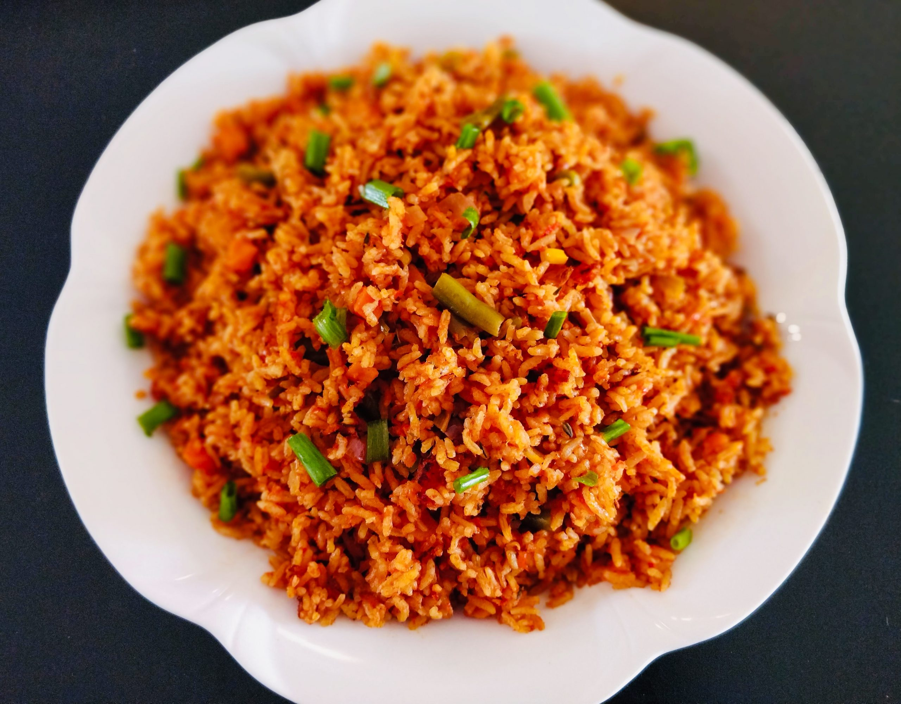
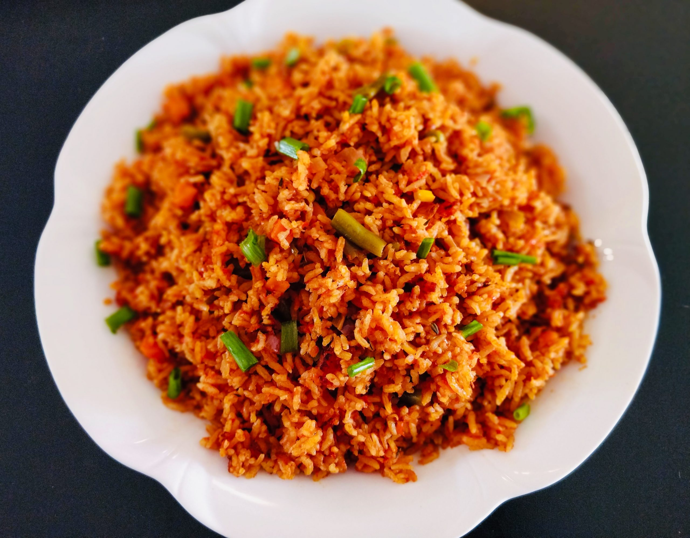
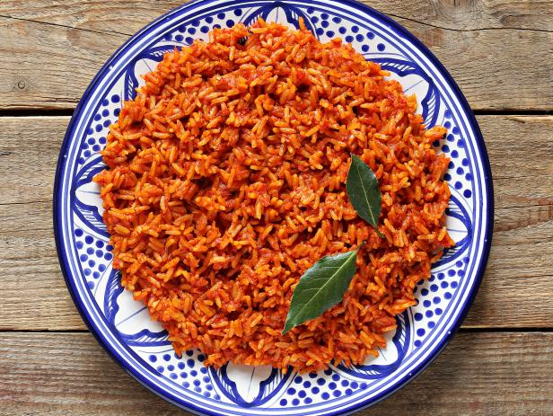
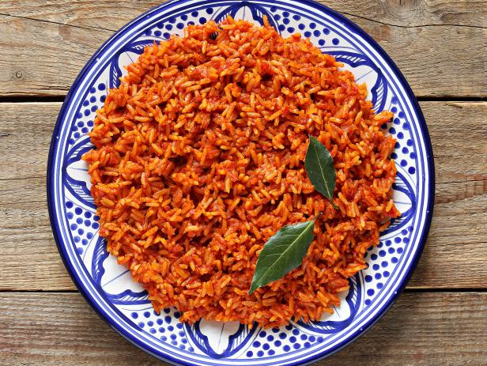

Jollof Rice
Cuisine: Nigerian
Rating: ⭐⭐⭐⭐⭐
Calories: 570 per serving
Total Time:1 hour
Prep Time:10 minutes
Jollof rice is the crown jewel of Nigerian (and West African) cuisine. Rich and hearty, the extensive blend of spices and motley of vegetables make for a powerful meal. Enjoy!
Got Everything You Need?
Instructions:
- Blend the bell peppers, tomatoes, onion, and scotch bonnets/habaneros to make the sauce.
- Heat oil in large pan over medium heat. Add diced onions and cook until soft. Add tomato paste and fry for 5 minutes. Stir in garlic, ginger, and bay leaves and cook for 2 more minutes.
- Add the blended sauce and cook until the sauce thickens (10-15 minutes).
- Season with thyme, curry powder, bouillon cubes, salt, and pepper. Cook for 2-5 minutes.
- Add rice and stir until rice is well coated. Add chicken stock and stir, cover pot, and bring to quick boil.
- When rice starts to boil, cut the heat to low and steam until rice is done (~30 minutes).
- Add butter, sliced tomato, and onions and stir. Turn off the heat and cover the pan so rice can steam the vegetables.
- Serve with plantains, salad, or chicken.
Gallery:
 

 

Other Good Recipes
-
Recipe Name
Recipe Name
Rating: ⭐⭐⭐⭐
Calories: 300 per serving
Total Time: 45 minutes
Prep Time: 15 minutes
-
Recipe Name
Rating: ⭐⭐⭐⭐
Calories: 300 per serving
Total Time: 45 minutes
Prep Time: 15 minutes
-
Recipe Name
Rating: ⭐⭐⭐⭐
Calories: 300 per serving
Total Time: 45 minutes
Prep Time: 15 minutes
-
Recipe Name
Rating: ⭐⭐⭐⭐
Calories: 300 per serving
Total Time: 45 minutes
Prep Time: 15 minutes